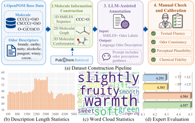
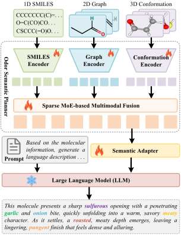
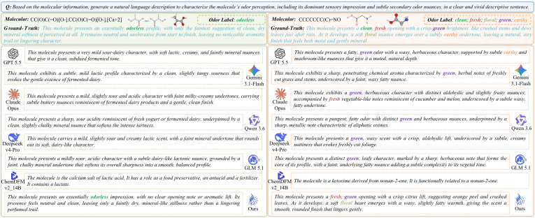

We introduce a molecular odor description generation task, which aims to generate natural language odor descriptions from molecular structures. Unlike conventional methods that describe molecular odor using discrete labels, this task requires models to generate expressive and human-interpretable sensory descriptions. To address this task, we propose a hierarchical multimodal olfactory semantic modeling framework, named ScentGen. ScentGen consists of three key components: an odor semantic planner, a semantic adapter, and a description generator. The odor semantic planner integrates complementary molecular information from 1D SMILES sequences, 2D molecular graphs, and 3D molecular conformations to learn discriminative and structured olfactory semantics. The semantic adapter maps the learned olfactory representation into the hidden space of a large language model, transforming molecular odor semantics into language-compatible continuous prompts. Conditioned on these prompts, the description generator produces coherent odor descriptions that reflect plausible sensory characteristics of the input molecule. Considering the lack of molecular datasets with natural language odor descriptions, we further construct a molecular odor description dataset containing paired multimodal molecular representations and human-interpretable odor descriptions. Extensive experiments demonstrate that ScentGen can generate coherent and expressive odor descriptions, providing a more flexible solution for molecular odor understanding beyond discrete odor label prediction.
Generate natural-language odor descriptions directly from molecular structures, rather than predicting only predefined odor labels.
Use an odor semantic planner, semantic adapter, and LLM-based generator to bridge molecular structures and sensory language.
Construct 4,983 molecule-description pairs with 1D SMILES, 2D molecular graphs, 3D conformations, and natural-language odor descriptions.
Existing molecular odor datasets are mainly designed for discrete label prediction and usually lack complete textual descriptions. To support molecular odor description generation, we construct the MOD dataset based on OpenPOM. Each molecule is paired with a 1D SMILES sequence, a 2D molecular graph, a 3D molecular conformation, and a natural-language odor description.
The dataset construction follows four steps: OpenPOM base data collection, molecular information construction, LLM-assisted annotation, and manual check and calibration. The final descriptions cover dominant odor profiles and subtle secondary nuances while maintaining textual fluency, odor consistency, perceptual plausibility, and chemical fidelity.

Dataset construction pipeline, description length statistics, word cloud statistics, and expert evaluation scores.
ScentGen progressively converts molecular information into olfactory semantics and then into natural language. First, the odor semantic planner extracts odor-related cues from 1D SMILES sequences, 2D molecular graphs, and 3D conformations. A sparse Mixture-of-Experts fusion module adaptively integrates complementary cues and produces a unified olfactory representation. Second, the semantic adapter maps this representation into a sequence of continuous virtual prompt tokens in the LLM embedding space. Finally, the description generator, implemented with Qwen-8B, produces fluent and sensory-consistent odor descriptions conditioned on the semantic prompts and task instruction.

Overview of ScentGen: an odor semantic planner extracts compact olfactory semantics, a semantic adapter converts them into continuous soft prompts, and an LLM-based generator produces odor descriptions.
Combines a character-level SMILES Transformer, a GINE graph encoder, and an EGNN conformation encoder with sparse MoE fusion.
Projects the 256-dimensional fused olfactory representation into molecule-aware continuous prompt tokens for the frozen LLM.
Uses Qwen-8B to generate coherent descriptions that reflect dominant sensory impressions and subtle secondary odor nuances.
ScentGen achieves the best performance across both the text semantic level and the odor label level. Compared with the supervised fine-tuning baseline, ScentGen improves METEOR, ROUGE, BERTScore-F1, Facets Coverage Mean, and F1, showing stronger molecule-to-odor semantic alignment and broader coverage of key odor facets.
| Method | BLEU ↑ | METEOR ↑ | ROUGE ↑ | BERTScore-F1 ↑ | FCM ↑ | F1 ↑ |
|---|---|---|---|---|---|---|
| GLM-5.1 | 5.710 | 0.204 | 0.234 | 0.738 | 0.527 | 0.535 |
| Qwen-3.6 | 4.520 | 0.181 | 0.242 | 0.745 | 0.558 | 0.558 |
| DeepSeek-V4 | 3.730 | 0.175 | 0.247 | 0.751 | 0.549 | 0.564 |
| Gemini-3.1 | 1.480 | 0.184 | 0.220 | 0.744 | 0.538 | 0.549 |
| Claude-Opus | 2.390 | 0.202 | 0.240 | 0.747 | 0.587 | 0.571 |
| GPT-4.1 | 0.991 | 0.157 | 0.210 | 0.734 | 0.509 | 0.522 |
| GPT-5.5 | 5.416 | 0.201 | 0.281 | 0.755 | 0.572 | 0.575 |
| ChemDFM | 0.073 | 0.077 | 0.127 | 0.636 | 0.099 | 0.113 |
| Qwen-8B | 0.189 | 0.069 | 0.126 | 0.695 | 0.432 | 0.477 |
| SFT | 14.200 | 0.330 | 0.320 | 0.768 | 0.549 | 0.542 |
| Ours | 15.500 | 0.351 | 0.353 | 0.776 | 0.605 | 0.616 |
Qualitative results show that general LLMs can generate fluent descriptions, but they often introduce semantic drift or miss important odor facets. ScentGen better captures dominant odor impressions and secondary nuances, and it avoids over-generation when the molecule has only a subtle odor profile.

Qualitative examples covering both single-label and multi-label odor description generation.
ScentGen is a hierarchical multimodal olfactory semantic modeling framework for molecular odor description generation. It introduces a language-based formulation of molecular odor understanding, constructs the MOD dataset, and demonstrates that structured olfactory planning and continuous semantic prompting can produce coherent, expressive, and sensory-faithful odor descriptions beyond fixed odor label prediction.
@article{scentgen2026,
title={ScentGen: Hierarchical Multimodal Olfactory Semantic Modeling for Molecular Odor Description Generation},
journal={XXXXX},
year={2026}
}